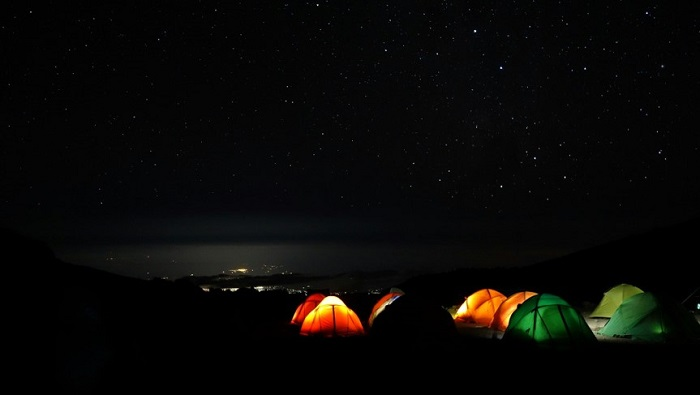
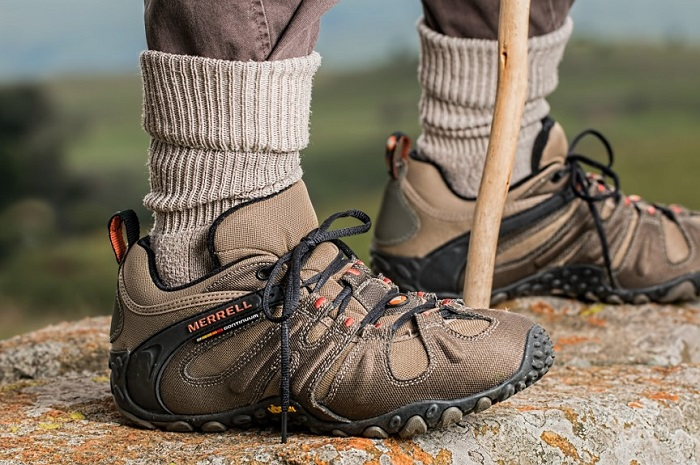
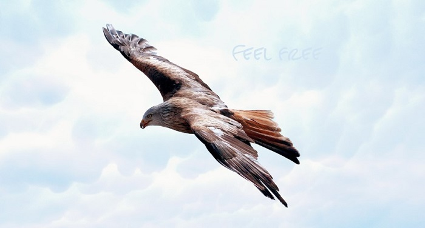
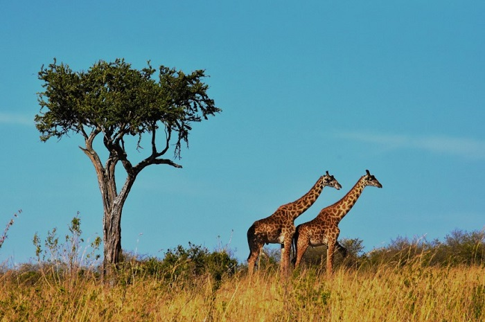
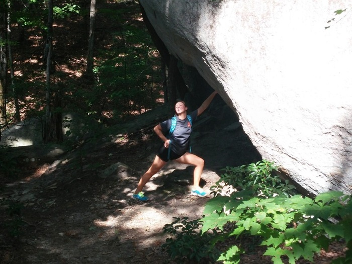

1.登山沿途景色绝美
在一周的时间里穿越四季，领略乞力马扎罗山的垂直自然带分布，欣赏繁星摧残的夜空，顶峰之日在近6000米的海拔饱览非洲之巅日出和传说中那即将消失冰川，乞力马扎罗山的风景绝对可以让你的相机收获无数美图！
2.挑战身心
对于生活在平原的我们来说，在乞力马扎罗山这个海拔来一次徒步绝对是对我们身体的挑战；连续一周甚至是更长时间不洗澡的露营生活，以及登顶前一天的艰苦攀爬。又是对你心理的重大考验。但是，从另一个角度来说，乞力马扎罗山之行可以帮你收获一个更好的自己！
3.体会真正的自由
乞力马扎罗山对于中国游客来说是一个相对冷门的旅游地，如果你能认真规划行程，避开登山高峰季（戳这里了解登山最佳时间）以及避开路线（戳这里了解乞力马扎罗山各条登山路线信息），那么你完全可以在那里模拟一把贝爷的“荒野求生”。这对于在拥挤的城市生活惯了的我们，是一种释放，所以说在乞力马扎罗山里你能够找到真正的自由。
4.减肥
想登乞力马扎罗山？训练先（戳这里了解训练方案详情）！ 为了最大程度提升你的登顶成功率，在行前，你要做好充足的体能准备，日常不锻炼的要开始有意识的锻炼，不瘦个十斤八斤也要瘦上个三四斤；而等你到了山里，高海拔很可能夺去你的食欲，很多人在山里面都被海拔“强行”瘦了身。
5.登山归来去游猎（safari），领略无与伦比的非洲
说到动植资源丰富，我们一定会先想到非洲；而那个真正能领略非洲之狂野的活动就是游猎了！许多走过很多非洲国家的童鞋们都说坦桑尼亚是最适合游猎的国家。在爬乞力马扎罗山之后，给自己放个假。白天坐着丰田越野车穿行在非洲草原之上，夜晚在草原之中安全而又豪华的客栈里点起篝火，来一瓶乞力马扎罗啤酒和来自世界各地的小伙伴一起分享自己刚刚圆了的“乞力马扎罗之梦”，世间最乐也不过如此了吧？
6.最关键的一点：“炫耀”的资本
乞力马扎罗山是7大顶峰之一，它也是7座山峰里“可操作性”最强的一座，珠穆朗玛峰（Everest）也许是我们普通人可望不可及的梦想，但乞力马扎罗山却是一个完全有可能实现的梦！连美国总统奥巴马都在自己的遗愿清单上列上了爬乞力马扎罗山，爬过乞力马扎罗山的你后半辈子完全可以拿着这个作为炫耀的资本啦。
